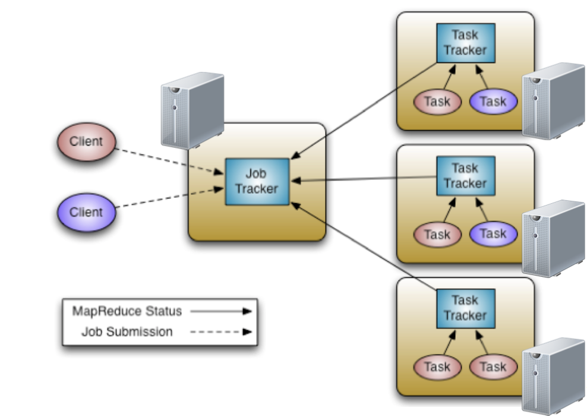

MapReduce
MapReduce is a programming model for distributed data processing across multiple nodes. The programs are designed to compute large volumes of data in a parallel fashion. MapReduce works by breaking the processing into two main phases: Map phase and Reduce phase.
MapReduce execution framework allows the following:
- Automatic parallelization and distribution
- Fault tolerance
- Abstraction for programmers
MapReduce Framework

MapReduce Phases
Map phase
- Map phase is usually for filtering or transforming data. Each mapper performs a user-defined operation on a single HDFS block
- Map tasks run on the node where the data block is stored
- Input: key/value pair
- Output: A list of zero or more key value/pairs
Partition - Shuffle and sort phase
- Partitioner: Determines which partition a given (key,value) pair will go to
- Shuffling: Moving map outputs to the reducers
- Sorting: The set of intermediate keys on a single node is sorted before passing to the reducer
Reduce phase
- Read all results for each key and performs a user-defined operation, for example: aggregations
- The Reducer outputs zero or more final key/value pairs to the HDFS
Coding with MapReduce
Data Types and Formats
- Keys and values are java objects
- Writable interface for serialization
- Values implement Writable interface
- Keys implement WritableComparable interface
- IntWritable – int
- LongWritable – Long
- FloatWritable – Float
- DoubleWritable - Double
- Text – String values
Let’s examine our first MapReduce program
A typical MapReduce program consists of three main parts: Driver, Mapper and Reducer code.
Driver Code
- Contains Job configuration and submission details
- Configurations not explicitly set in your driver code will be read from your Hadoop configuration files (/etc/hadoop/conf)
Examine the below sample for Driver Code of word count example:
public static void main(String args[]) throws Exception { Configuration conf = new Configuration(); Job job = new Job(conf,"word count"); job.setInputFormatClass(TextInputFormat.class); job.setJarByClass(WordCount.class); job.setMapperClass(WCMapper.class); job.setReducerClass(WCReducer.class); job.setMapOutputKeyClass(Text.class); job.setMapOutputValueClass(IntWritable.class); job.setOutputKeyClass(Text.class); job.setOutputValueClass(IntWritable.class); job.setOutputFormatClass(TextOutputFormat.class); FileInputFormat.addInputPath(job, new Path(args[0])); FileOutputFormat.setOutputPath(job, new Path(args[1])); System.exit(job.waitForCompletion(true) ? 0 : 1); }
- Extend Mapper base class
- Override map()
- Input: key/value
- Output: key/value
Sample for Map class for word count example:
static class WCMapper extends Mapper<Object, Text, Text, IntWritable> { public final static IntWritable one = new IntWritable(1); private Text word = new Text(); public void map(Object key, Text value, Context context) throws IOException, InterruptedException { System.out.println(key); System.out.println(value); StringTokenizer itr = new StringTokenizer(value.toString()); while (itr.hasMoreTokens()) { word.set(itr.nextToken()); context.write(word, one); } } }
- Extend Reducer base class
- Override reduce()
- Input: key/collection of values
- Output: key/value
Sample for Reduce class for word count example:
static class WCReducer extends Reducer<Text, IntWritable, Text, IntWritable> { private IntWritable result = new IntWritable(); protected void reduce(Text key, Iterable<IntWritable> values, Context context) throws IOException, InterruptedException { int sum = 0; for (IntWritable value : values) sum += value.get(); result.set(sum); context.write(key, result); } }
Running the program
- Download bible_shakespear data set
- Decompress and move to HDFS
hdfs dfs -put bible_shakes.nopunc /user/<your_user>
- Download source code for word count example
- Compile the code and create a jar (You can download this wordcount.jar for testing)
- To execute a MapReduce job:
/bin/hadoop jar <jar-name> <main-class> <input-path> <output-path>
- Use the following command to run our example:
/bin/hadoop jar wordcount.jar exascale.info.lab.wordcount.WordCount /user/<your_user>/bible_shakes.nopunc /user/<your_user>/<output_folder>
- Monitor the job status and examine the logs:
https://hadoop-rm.daplab.ch/cluster
- Examine the output in HDFS
Implementation Tips
- Input splits
- Counters
- Distributed cache
- Number of mappers and reducers
Bigrams count
- Use the bible_shakespear data set again
- Write a MapReduce program to count the co-occurrences of pairs of words
- For simplicity, you can use this bigrams_Helper.zip program structure and build upon it
- Monitor the progress of your job
- Examine the output
- Use the combiner class to optimize your job
Solution
Mapper class:
- First we need to convert the Text value recieved by each map to String[]:
public static String[] textToString(Text value) { String text = value.toString(); text = text.toLowerCase(); text = text.replaceAll("[^a-z]+", " "); text = text.replaceAll("^\\s+", ""); StringTokenizer itr = new StringTokenizer(text); ArrayList<String> result = new ArrayList<String>(); while (itr.hasMoreTokens()) result.add(itr.nextToken()); return Arrays.copyOf(result.toArray(),result.size(),String[].class);}
- Then we can loop over the String[] object and extract bigrams:
for(int i = 0; i < Tokens.length - 1; i++) { word.set(Tokens[i] + " " + Tokens[i+1]); context.write(word, one);}
Reducer class:
- We can use the same reducer as in the word count example, because we need to sum the values of the received keys (in this case the keys emitted by the mappers are bigrams):
int sum = 0; for (IntWritable value : values) sum += value.get(); result.set(sum); context.write(key, result);